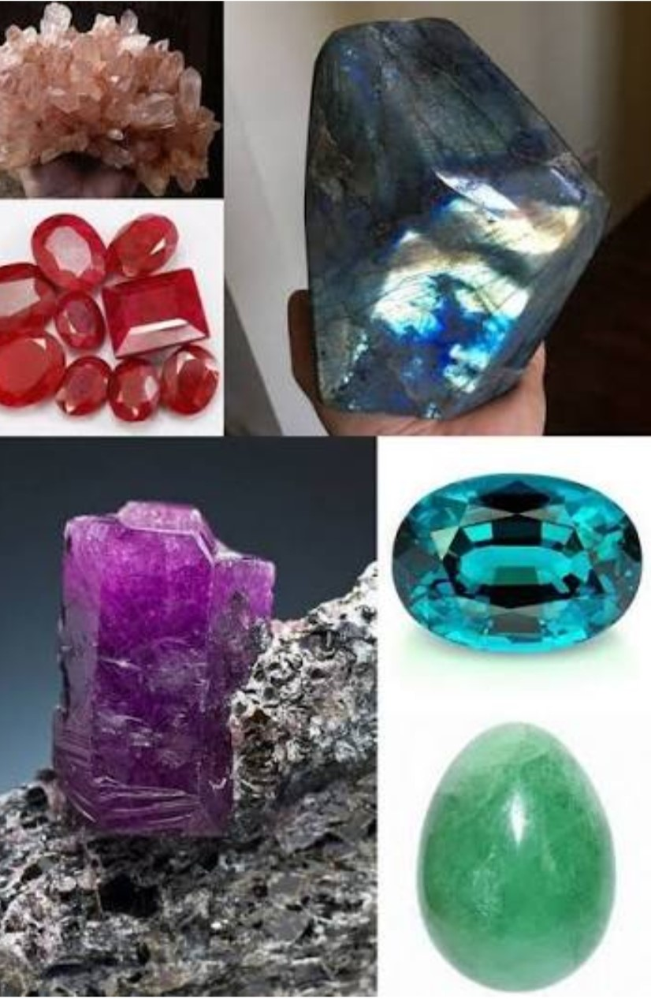

L'agriculture
la production de vanille à Madagascar,
Madagascar est célèbre pour sa vanille Bourbon,une variété prisée pour sa richesse aromatique
et sa qualité exeptionnelle.
Secteur traditionnellement dominant mais à faible productivitè
Madagascar est le premier producteur de vanille avec d'autres produits agricoles important comme le café le épices
La production reste cependant
est un moteur de croissance mais des prix mondiaux des matières premières.
Les mine à Madaga

L'industrie et mine
L'industrie représente une part important du PIB, avec l'extractionde nickel,cobalt,graphite,etc
Le secteur miner scar,c'est un secteur clé
Les ressources minières :nickel,cobalt,graphite,pierre précieuse,or.
.jpg)
Services et tourisme
Les service(commerce,télécomimunications,transports)sont un pilier majeur de l'conomie
Les tourisme à Madagascar,c'est un secteur en plein essor
Les atout touristiques:biodiversité exeptionnelle,paysages et uniques (tsingy,canyons,plages)
Le torisme se redresse après les perturbation lies à la pandémie,avec une croissance notable du nombre de visiteurs internationaux